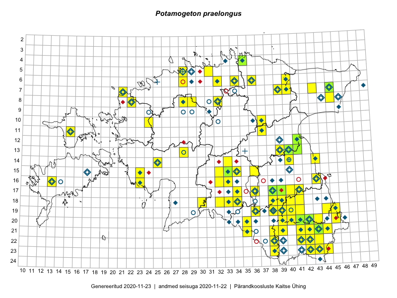

Potamogeton praelongus
Uuendatud: 2016-12-07
Kaardile koondatud taksonid: Potamogeton praelongus Wulfen

Kaart põhineb 20 kirjel, neist vaatlusi 19 ja eksemplare 1. Taksonit on leitud 17 ruudust.
| Ruut | Vaatleja(d) | Vaatlusaeg | Kirje tüüp | Viide andmebaasikirjele |
|---|---|---|---|---|
| 20-45 | Katrit Karus, Tõnu Feldmann | 2015-07-27 | ruut/ala | vaata PlutoFis |
| 20-41 | Katrit Karus, Tõnu Feldmann | 2015-07-28 | ruut/ala | vaata PlutoFis |
| 20-41 | Tõnu Feldmann, Katrit Karus | 2015-07-28 | ruut/ala | vaata PlutoFis |
| 19-45 | Tõnu Feldmann, Katrit Karus | 2015-07-27 | ruut/ala | vaata PlutoFis |
| 16-33 | Tõnu Feldmann, Katrit Karus | 2015-07-31 | ruut/ala | vaata PlutoFis |
| 16-32 | Tõnu Feldmann, Katrit Karus | 2015-07-31 | ruut/ala | vaata PlutoFis |
| 15-32 | Katrit Karus, Tõnu Feldmann | 2015-07-31 | ruut/ala | vaata PlutoFis |
| 06-32 | Katrit Karus, Tõnu Feldmann | 2015-08-04 | ruut/ala | vaata PlutoFis |
| 05-31 | Katrit Karus, Tõnu Feldmann | 2015-08-04 | ruut/ala | vaata PlutoFis |
| 17-34 | Maria Abakumova, Helle Mäemets | 2015-05-27 | ruut/ala | vaata PlutoFis |
| 17-34 | Maria Abakumova, Helle Mäemets | 2015-05-27 | punkt | vaata PlutoFis |
| 18-41 | Kadi Palmik, Helle Mäemets | 2015-08-13 | ruut/ala | vaata PlutoFis |
| 17-41 | Kadi Palmik, Helle Mäemets | 2015-07-24 | ruut/ala | vaata PlutoFis |
| 15-33 | Kadi Palmik, Helle Mäemets | 2015-08-14 | ruut/ala | vaata PlutoFis |
| 19-41 | Kadi Palmik, Helle Mäemets | 2015-08-13 | ruut/ala | vaata PlutoFis |
| 12-41 | Kadi Palmik, Helle Mäemets | 2015-07-24 | ruut/ala | vaata PlutoFis |
| 15-36 | Helle Mäemets, Mare Leis, Jaak-Albert Metsoja | 2015-07-05 | ruut/ala | vaata PlutoFis |
| 10-24 | Helle Mäemets, Tiina Elvisto | 2016-07-06 | ruut/ala | vaata PlutoFis |
| 10-24 | Helle Mäemets, Tiina Elvisto | 2016-07-06 | punkt | vaata PlutoFis |
| 13-41 | Peedu Saar | 2015-08-11 | eksemplar | vaata PlutoFis |